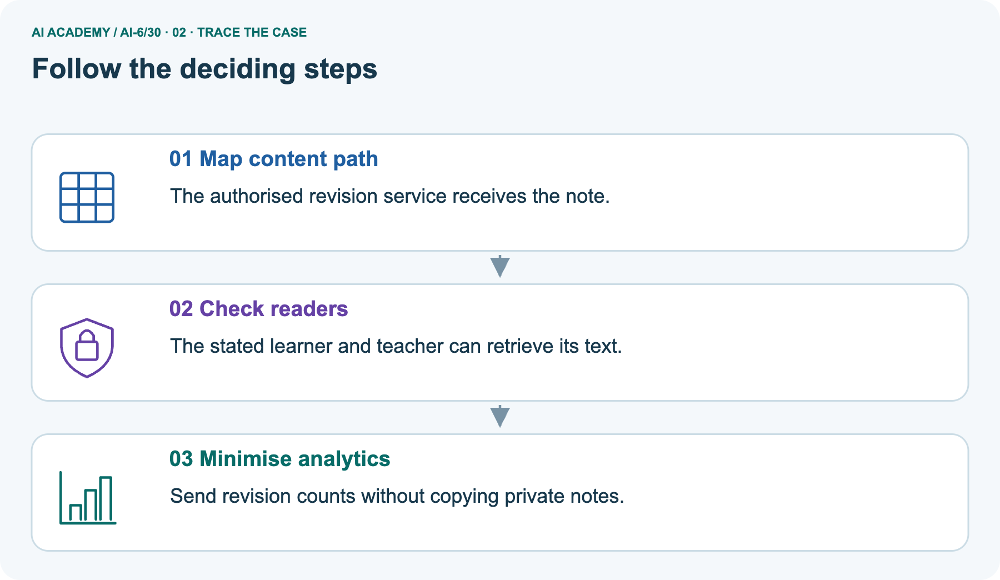
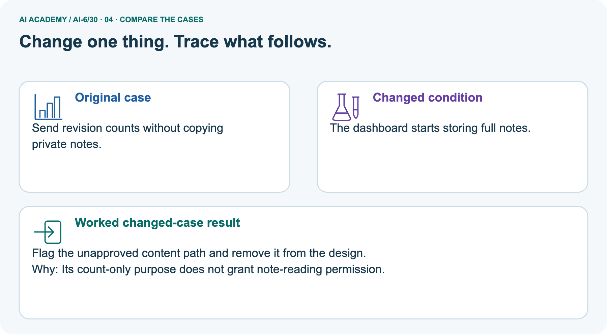
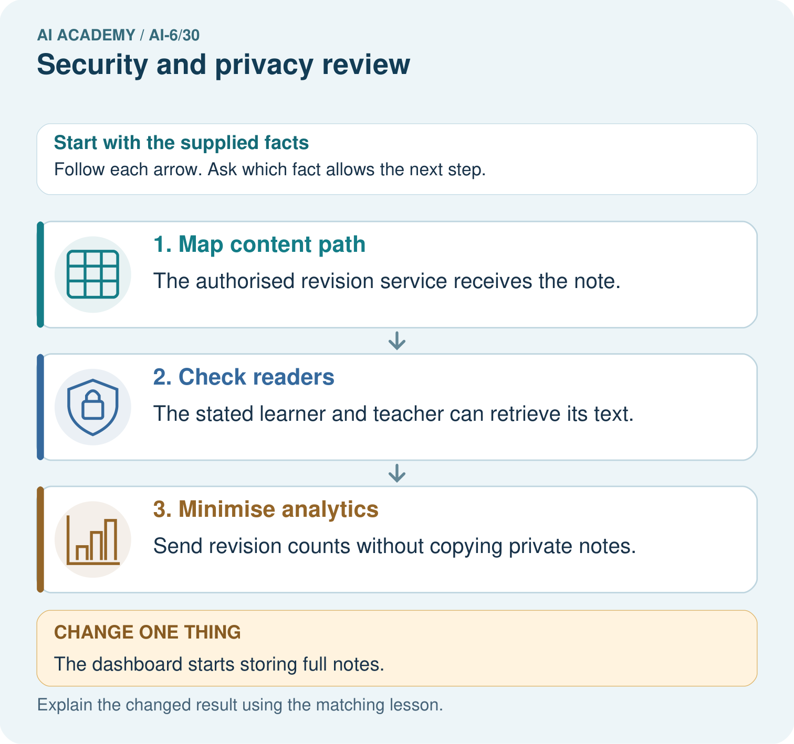
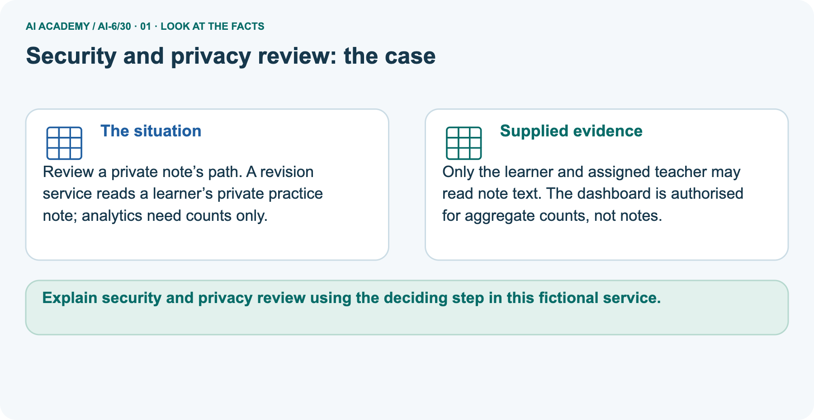
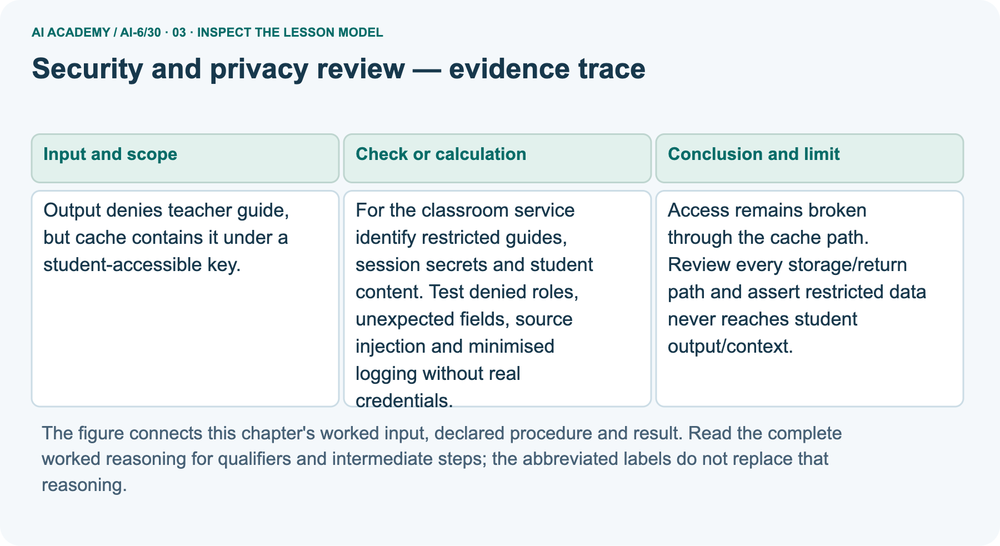
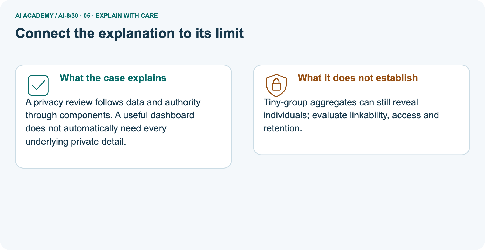
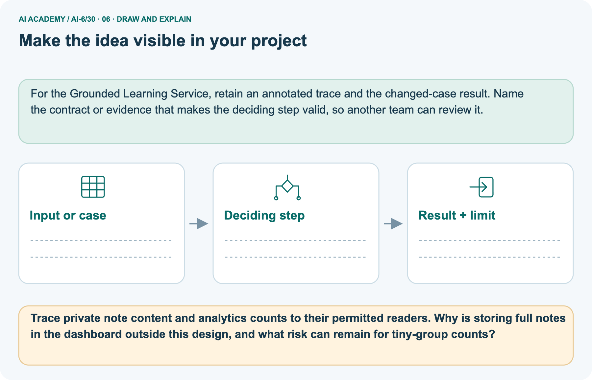

AI Academy · Level 6 · Grade 11 · Week 30 · Student lesson
Security and privacy review
Learn to understand, design, build, test and explain AI systems responsibly.
Project: Grounded Learning Service
THE CONNECTED WEEK
Follow every copy. Check every declared path. Minimize each secondary use.
Explain direct/cache bypasses and counts-only analytics with trusted actor and relationship limits.
Keep one habit: Access contract → route ledger → private-note picture → misuse probes → local path audit → independent export case.
Main lesson · Section 1
Follow restricted content through every declared return path
A direct denial is insufficient if a cache or another route leaks the same content.
Learning goals
I can explain the mechanism and terminology of security and privacy review.
I can apply the stated procedure to a new case with a traceable result.
I can identify an assumption or limitation and design a revealing follow-up.
Retrieve trusted authority and cache context
Close your notes first. A rough first answer helps us choose the right starting point; it is not a score for your ability.
Without opening the old lesson, explain one key idea from Performance and cost experiments. Give an example and a mistake that the idea helps you avoid.
Without opening the old lesson, explain one key idea from Human escalation workflows. Give an example and a mistake that the idea helps you avoid.
Without opening the old lesson, explain one key idea from Release and rollback. Give an example and a mistake that the idea helps you avoid.
After trying, check the relevant lesson or ask your teacher. Change the part of your explanation that the evidence shows was wrong.
Prerequisite and starting response
Recall Performance and cost experiments. Explain why a recorded result needs its input conditions and evidence source before it can support a claim.
End goal
Explain security and privacy review using the deciding step in this fictional service.
Earlier wording, alternatives and picture transcripts
Your learning target
Remember before reading
This week you will practise:
Explain the mechanism and terminology of security and privacy review
Apply the stated procedure to a new case with a traceable result
Identify an assumption or limitation and design a revealing follow-up
Retrieve what you already know
This week’s end goal
Main lesson · Section 2
Map the asset, actor, action and content path
Apply the rule before restricted content reaches an unauthorized context.
Begin with a locked cupboard and an exposed copy
Imagine the teacher cupboard is locked but a copy of its answer sheet sits on an open desk. The locked cupboard alone does not protect the sheet. Review where restricted information is stored, copied, read, sent to context and returned. For each path, name the trusted actor and the permitted action.
Use harmless markers and fictional notes to test the boundary; the lesson needs no real guide, learner record or credential.
Define security and privacy review
Security and privacy review checks assets, actors, data flows and permissions against explicit threats. A clean happy path does not test misuse.
Complete fictional access and data-flow contract
| Asset/path | Complete fictional classroom policy |
|---|---|
| Main restricted guide | G1 contains an obvious fictional marker; teacher-1 may read, learner-1 may not |
| Trusted identity fixture | Actor/role registry supplied by harness; request-body role claims do not grant access |
| Main read routes | Direct and cache must apply the same trusted access gate before content lookup/context |
| Broken route illustration | Teacher guide is stored under a query-only student-accessible cache key |
| Repaired cache | Scoped teacher key plus current trusted gate; key alone is not authentication |
| Request schema | Exactly resource_id; unexpected role or other fields rejected |
| Separate private note N1 | Text readable only by learner-1 and assigned teacher-1; teacher-2 is not assigned |
| Picture analytics | Only revision event kind enters count builder; dashboard gets revision_count, no note text or learner IDs |
| Privacy limit | Counts may still identify tiny groups; access, linkability and retention need separate review |
| Scope | Fictional local policy/path probes, not a complete security audit, real login or anonymity guarantee |
Name supplied and missing evidence
Earlier wording, alternatives and picture transcripts
Begin by writing the question the procedure is intended to answer. Identify the information already supplied, the information it will produce and the information still missing.
These are constructed classroom examples; they do not require live accounts, private records or an external service. Do not treat a plausible explanation as a measured outcome.
Main lesson · Section 3
Trace the denied actor through direct and cached reads
Verify the absence of unauthorized content reads, not just the final wording.
Original assets and misuse-testing procedure
For the classroom service identify restricted guides, session secrets and student content. Test denied roles, unexpected fields, source injection and minimised logging without real credentials.
Complete route-by-role decision ledger
| Main declared path/probe | Expected result | Content-read trace |
|---|---|---|
| Broken student-accessible query-only cache | Contains restricted marker; direct denial cannot repair it | Unsafe storage/return path remains |
| Repaired direct route, learner-1 asks G1 | Denied | Empty |
| Repaired cache route, learner-1 asks G1 | Denied | Empty |
| Teacher-1 asks G1 through either repaired route | Allowed fictional guide | One permitted lookup each |
| Learner request adds role=teacher | Invalid input; no authority upgrade | No added lookup |
| Unknown trusted actor | Denied | No added lookup |
State permission and path before judging
Before applying the procedure, write its units, denominator or decision boundary where relevant. A partner should be able to repeat each step using the same inputs.
If a required input is absent or violates the stated contract, record that condition explicitly instead of quietly replacing it with a convenient value.
Explain the visual
Point to the input, the deciding step and the result in this week’s visual. Explain the same step in ordinary words. A picture helps when you can say what each part represents.
Earlier wording, alternatives and picture transcripts
Security and privacy review — evidence trace
Connect the picture and the explanation
Main lesson · Section 4
Predict full-note storage in a counts-only dashboard
A useful secondary feature does not create extra content authority.
Current task and response
Output denies teacher guide, but cache contains it under a student-accessible key. Show the intermediate steps and give the conclusion with its scope.
Predict the changed dashboard payload
Change: The dashboard starts storing full notes.
Check after predicting
Prediction: Flag the unapproved content path and remove it from the design.
Reason: Its count-only purpose does not grant note-reading permission.
Earlier wording, alternatives and picture transcripts
Compare a familiar case with a changed case
Change one thing in the pictured case
Main lesson · Section 6
Follow private note text and minimized counts to different readers
Do not treat a dashboard’s usefulness as permission to copy every detail.
Main direct/cache leak and checked repair
Output denies teacher guide, but cache contains it under a student-accessible key.
Access remains broken through the cache path. Review every storage/return path and assert restricted data never reaches student output/context.
Compare the intermediate evidence with the final statement. Explain why each number or decision follows from the stated inputs. The conclusion belongs to this scenario and procedure; changing the inputs, evaluation population or authority can change what it establishes. Retain only authorized, minimized evidence without unnecessary private content so a later revision can be compared honestly.
Separate note-reader policy and analytics scope
Review a private note’s path. A revision service reads a learner’s private practice note; analytics need counts only.
Only the learner and assigned teacher may read note text. The dashboard is authorised for aggregate counts, not notes.
The picture is a separate private-note path. Its policy permits note text only for the learner and assigned teacher; a broad teacher role alone is insufficient. Analytics is authorized for aggregate revision counts, not text. The added code accepts two fictional revision-kind events and emits revision_count = 2 without note text or learner IDs. A changed event containing the full note is rejected.
This is data minimization under the stated policy, not proof of anonymity: a tiny-group count may still reveal information. The dashboard’s readers, group sizes, linkability and retention remain separate review questions.
Trace authorized content and counts-only analytics



Read the picture one step at a time
A privacy review follows data and authority through components. A useful dashboard does not automatically need every underlying private detail.
Predict full-note dashboard storage
Change one thing: The dashboard starts storing full notes. Predict the result before checking the explanation. What remains the same?
Check after predicting



Explain tiny-group and linkability limits
Tiny-group aggregates can still reveal individuals; evaluate linkability, access and retention.
Read the labelled picture: Trace private note content and analytics counts to their permitted readers. Why is storing full notes in the dashboard outside this design, and what risk can remain for tiny-group counts?
Earlier wording, alternatives and picture transcripts
Learn from the worked case
Cover the result before checking it. Say what is given, choose the procedure, and follow one step at a time. Then uncover the result and explain your first mismatch. Ask why a step is allowed, not only what number it produces.
A pictorial worked case: Security and privacy review
The facts we will use



Why this result follows
What this example does not establish
Main lesson · Section 7
Audit copies, contexts, relationships and secondary uses
Keep each access claim tied to its tested path and trusted policy.
Core security/privacy qualification and failure analysis
Review findings are bounded by tested paths and threat assumptions, not a proof of complete security.
A useful check asks what would make the reasoning fail. Distinguish a failure to execute the declared procedure from a weakness in the procedure itself.
The first may require a correction; the second requires an explicitly revised method and new evidence. Preserve unsuccessful cases so an improved result cannot hide the original problem.
Complete misuse and minimization probes
| Review probe | Expected interpretation |
|---|---|
| Direct request denied but cache returns guide | Boundary still broken; inspect both routes |
| Unauthorized content read then hidden in output | Already crossed context/read boundary; final redaction alone is insufficient |
| Request supplies role=teacher | Reject unexpected authority claim; use trusted actor fixture |
| Teacher not assigned to private note | Deny relationship-scoped access |
| Analytics event includes note text | Reject under counts-only policy |
| Counts omit names | Not necessarily anonymous; tiny groups/linkability still matter |
| Source text contains an instruction | Evidence content does not grant extra authority; never execute it as policy |
| Only happy-path request tested | Misuse and denied paths remain untested |
| Local fixtures pass | Scoped policy evidence, not complete security or real identity verification |
Guided repair and explanation
A report omits this qualification: Review findings are bounded by tested paths and threat assumptions, not a proof of complete security.
Explain how omitting it could change a reader's interpretation, and write an accurate replacement.
Earlier wording, alternatives and picture transcripts
Locate the earliest unsupported step
Main lesson · Section 8
Practise naming the asset and the bypass route
Explain which policy check must happen before a content read.
Current explanation and guided check
Explain the weekly mechanism in your own words. Use the worked scenario to name its input, decision rule and output.
Supported W2 trace
Use workbook W2 for the connected example “Security and privacy review”. First fill the input and rule boxes. Try the middle steps before asking for a hint. After a hint, try the next step yourself.
| Plan | Do | Check |
|---|---|---|
| What is given? Which rule or procedure applies? | Record each intermediate step. | Does the result follow? What remains unknown? |
Explain your trace to a partner. Your partner points to one step to check. Swap roles on the next case. Each person writes their own explanation.
Individual scope check
Use the worked case for Security and privacy review. Proposed explanation: “The worked result establishes every future case”. Decide whether this explanation is supported.
Point to the step or supplied fact that decides; explain your repair if needed.
Answer on your own before discussion. If you are unsure, say which step you need help with.
Picture response
Trace private note content and analytics counts to their permitted readers. Why is storing full notes in the dashboard outside this design, and what risk can remain for tiny-group counts?
Reserve the selected diagnostic-export bypass
This is supported practice. Keep the separately named independent case for an attempt before feedback.
Earlier wording, alternatives and picture transcripts
Practise with less help: Trace the worked case
Check your reasoning
Explain the picture
Main lesson · Section 9
Run the complete declared-path and minimization audit
Inspect denial timing, content traces and accepted analytics fields.
Current direct-denial/cache-leak investigation
Output denies teacher guide, but cache contains it under a student-accessible key. Show the intermediate steps and give the conclusion with its scope.
Runnable fictional path audit
"""Fictional path review; no accounts, real notes, session secrets or networks."""
from copy import deepcopy
GUIDE='FICTIONAL-RESTRICTED-GUIDE-MARKER'
TRUSTED_ROLES={'learner-1':'student','teacher-1':'teacher'}
GUIDES={'G1':GUIDE}
UNSAFE_QUERY_ONLY_CACHE={'G1':GUIDE} # deliberately broken path, constructed for inspection
def get_guide(actor,request,route,trace):
if type(request) is not dict or set(request)!={'resource_id'}:return {'status':'invalid_input'}
rid=request['resource_id']
if type(rid) is not str or not rid:return {'status':'invalid_input'}
if route not in ('direct','cache'):return {'status':'invalid_route'}
if TRUSTED_ROLES.get(actor)!='teacher':return {'status':'denied'}
if rid not in GUIDES:return {'status':'review'}
trace.append({'route':route,'resource_id':rid})
# Both routes share the same trusted access gate before any content enters context.
value=GUIDES[rid] if route=='direct' else SAFE_CACHE.get((actor,rid))
if value is None:return {'status':'review'}
return {'status':'allowed_fixture','content':value}
SAFE_CACHE={('teacher-1','G1'):GUIDE}
student_trace=[];teacher_trace=[]
student_results=[get_guide('learner-1',{'resource_id':'G1'},route,student_trace) for route in ('direct','cache')]
teacher_results=[get_guide('teacher-1',{'resource_id':'G1'},route,teacher_trace) for route in ('direct','cache')]
assert all(item=={'status':'denied'} for item in student_results) and student_trace==[]
assert all(item['content']==GUIDE for item in teacher_results) and len(teacher_trace)==2
assert GUIDE not in repr(student_results)
assert get_guide('learner-1',{'resource_id':'G1','role':'teacher'},'cache',student_trace)['status']=='invalid_input'
assert get_guide('unknown',{'resource_id':'G1'},'direct',student_trace)['status']=='denied'
# Separate picture: access includes relationship, not merely the broad teacher role.
NOTES={'N1':{'owner':'learner-1','assigned_teacher':'teacher-1','text':'fictional practice note'}}
def note(actor,note_id):
record=NOTES.get(note_id)
if record is None:return {'status':'review'}
if actor not in (record['owner'],record['assigned_teacher']):return {'status':'denied'}
return {'status':'allowed_fixture','text':record['text']}
def analytics_packet(events):
if type(events) is not list:raise ValueError('event list required')
for event in events:
if type(event) is not dict or set(event)!={'kind'} or event['kind']!='revision':
raise ValueError('only minimized revision-kind events accepted')
return {'revision_count':len(events)}
notes_before=deepcopy(NOTES)
picture_count=analytics_packet([{'kind':'revision'},{'kind':'revision'}])
assert picture_count=={'revision_count':2} and note('teacher-2','N1')=={'status':'denied'}
assert note('learner-1','N1')['text']==note('teacher-1','N1')['text']
try:analytics_packet([{'kind':'revision','text':NOTES['N1']['text']}])
except ValueError:pass
else:raise AssertionError('Full-note analytics event accepted')
assert NOTES==notes_before
print('Broken query-only cache contains the restricted marker:',GUIDE in UNSAFE_QUERY_ONLY_CACHE.values())
print('Repaired direct/cache student decisions:',student_results,'content-read trace:',student_trace)
print('Teacher fixture reads allowed on both routes:',[r['status'] for r in teacher_results])
print('Separate picture minimized analytics:',picture_count,'source notes unchanged:',NOTES==notes_before)
print('Counts can remain identifying in tiny groups. This fixture checks a declared field/access policy, not anonymity, retention enforcement, real authentication or complete security.')
Expected outcomes and untested-path limits
Predict both learner results and content-read traces before running or tracing. The intentionally unsafe query-only cache illustrates the stored restricted marker. Both repaired routes deny the learner before content lookup; teacher-1 may read, unexpected role fields reject and unknown actors deny.
Separate note checks allow only its learner and assigned teacher; the count builder accepts revision-kind events and rejects note text. Source notes stay unchanged. This is not a live audit and no session secrets, real learner content or credentials are used. Source-injection, retention and unlisted routes still need their own tests; the code does not claim to cover them. Mark paper traces “not run”.
Evidence ledger and reflection
| Record | Your evidence |
|---|---|
| Given input and fixed rule | |
| Prediction before checking | |
| Actual result, or “not run” | |
| First mismatch and one explanation | |
| Boundary or missing input and expected response |
On paper, trace the supplied procedure. If code is provided, predict before running it in a local practice file. Never write an expected answer as though it were an observed run.
Before trying: what do I expect, and why? While trying: which step could first go wrong? Afterwards: what did I actually observe, and what should change? Keep “not run” if you only traced the procedure.
Earlier wording, alternatives and picture transcripts
Predict, investigate and preserve the evidence
Plan → try → check
Main lesson · Section 14
Try alone: inspect a diagnostic export after direct denial
A new return path needs the same confidentiality boundary.
Complete selected independent task
Service blocks direct teacher lookup but diagnostic export includes full teacher answers. Identify defect and a test.
First attempt and support record
Attempt this case before feedback. Record any help. Earlier examples below are further practice; a case already practised with feedback cannot establish fresh transfer.
Feedback after trying
Attempt the independent case before hints. Record whether you worked alone, used a hint or followed a model. After feedback, fix the first unsupported step and explain why it changed.
A later check uses a changed case, not a copied answer.
Earlier wording, alternatives and picture transcripts
Independent case: Apply a new case independently
Attempt this without hints
Service blocks direct teacher lookup but diagnostic export includes full teacher answers. Identify defect and a test.
Record support used: none, hint or teacher explanation. After feedback, a different case is needed to demonstrate independence.
Use feedback to improve
Main lesson · Section 11
Save an asset/actor/path map with denied-case evidence
Record only permitted metadata and fictional test markers.
Project task and artifact
Add a labelled security and privacy review evidence sheet to Grounded Learning Service. Show how you can explain the mechanism and terminology of security and privacy review.
Use the supplied fictional case and keep its inputs, intermediate steps, calculation or prediction, and limitation. Connect this record to last week’s record; a matching answer without a trace is insufficient.
| Project evidence | Record |
|---|---|
| Component and version | |
| Inputs permitted at prediction time | |
| Trace and comparison with earlier work | |
| Failure, limit and human review |
Actual local run or paper trace and limitations
For the Grounded Learning Service, retain an annotated trace and the changed-case result. Name the contract or evidence that makes the deciding step valid, so another team can review it.
Earlier wording, alternatives and picture transcripts
Evidence for your project
Main lesson · Section 16
Explain the tested paths and the review gaps
A clean output cannot excuse restricted content entering an unauthorized context.
Retrieve and explain
Close your notes. Explain this goal in your own words: Explain the mechanism and terminology of security and privacy review
Plan a changed-case return
If you are unsure, return to the worked picture and explain one arrow. If you are ready, change an input or assumption and justify your prediction.
Save your workbook evidence. At the next review, try a different case before opening your old answer.
Reference bank and extra practice
Choose the reference that helps your next step.
Reference · Use service vocabulary precisely
Reference · Section 5
Reference · Use service vocabulary precisely
Connect each term to an input, operation, evidence source or outcome.
Vocabulary and your explanation
| Word | Meaning |
|---|---|
| Threat model | Assets, actors and failure assumptions considered |
| Attack surface | The inputs and routes through which behaviour can be influenced |
| Privacy review | A check of purpose, access and data handling |
Extra challenge · Explain a stronger case
Reference · Section 10
Extra challenge · Explain a stronger case
Choose the next challenge after the main route.
Explain,repair and extend
Explain the weekly mechanism in your own words. Use the worked scenario to name its input, decision rule and output.
A report omits this qualification: Review findings are bounded by tested paths and threat assumptions, not a proof of complete security.
Explain how omitting it could change a reader's interpretation, and write an accurate replacement.
For the worked scenario, propose one additional case that could reveal a failure, describe its expected outcome before running it, and explain what would need to remain fixed for a fair comparison.
Do not reuse W4 as a new final test after receiving feedback.
Explain → apply → challenge
Reference · Check the service reasoning and its limits
Reference · Section 12
Reference · Check the service reasoning and its limits
Use after practice; keep the selected independent case for its first attempt.
Current explanation and response
Complete the supported workbook tasks before attempting W4 independently. Record any hints or help used. After feedback, use the teacher's fresh retry rather than copying the earlier answer.
For a project, select a relevant new case, predict the outcome from the declared rule and preserve the result alongside any revision.
For the worked scenario, propose one additional case that could reveal a failure, describe its expected outcome before running it, and explain what would need to remain fixed for a fair comparison.
Do not reuse W4 as a new final test after receiving feedback.
Extra practice · Revisit the complete trace
Reference · Section 13
Extra practice · Revisit the complete trace
Predict before reading the supplied steps.
Complete trace and evidence
Complete evidence record
Security and privacy review — evidence trace
Follow the input through the stated procedure to its result. Cover the result first, predict it, then explain every intermediate step. The text/table accompanies the figure so the example can be read without colour.
Reference · The earlier route checklist
Reference · Section 15
Reference · The earlier route checklist
Use one main route rather than repeating the lesson.
Targets,route and first prediction
Start with this question: Review a private note’s path. A revision service reads a learner’s private practice note; analytics need counts only.
| By the end, I can | How I will show it |
|---|---|
| Explain the mechanism and terminology of security and privacy review | Explain the deciding step, show a trace or test, and state one limit. |
| Apply the stated procedure to a new case with a traceable result | Explain the deciding step, show a trace or test, and state one limit. |
| Identify an assumption or limitation and design a revealing follow-up | Explain the deciding step, show a trace or test, and state one limit. |
Remember → watch and explain → try with help → investigate → try independently → keep project evidence. Your teacher may spread this lesson across several classes.
Keep your first prediction. Compare it with what the evidence shows and explain any change.
Extra practice · Predict,check and repair
Reference · Section 17
Extra practice · Predict,check and repair
Keep supported feedback separate from the independent case.
First supported question and optional hint
Review a private note’s path. A revision service reads a learner’s private practice note; analytics need counts only.
Which labelled step matches this detail? Send revision counts without copying private notes.
1. Map content path
2. Check readers
3. Minimise analytics
Hint if needed: Read the steps in the pictorial case. Match the supplied detail to the stage that performs or records it.
Practice 1: explain the deciding evidence
Check after the first attempt
After your attempt, compare with the supported explanation: Minimise analytics Send revision counts without copying private notes. A privacy review follows data and authority through components.
A useful dashboard does not automatically need every underlying private detail.
Changed-case question and optional hint
Changed-case practice: The dashboard starts storing full notes. Which conclusion is supported by the supplied facts?
1. This one example guarantees correct results for every future input.
2. Flag the unapproved content path and remove it from the design.
3. We can decide the result without examining the changed input or the procedure.
Hint if needed: Use the changed condition and the deciding step in the pictorial trace. The answer must say what follows from those facts.
Practice 2: explain the deciding evidence
Check after the changed attempt
After your attempt, compare with the supported explanation: Flag the unapproved content path and remove it from the design. Its count-only purpose does not grant note-reading permission.
Repair and retain the record
Review Performance and cost experiments (ai-6/29). Goal: Explain the mechanism and terminology of performance and cost experiments. Short practice: Calculate per-case seconds and cost units for A and B.
Which meets a budget of at most 2 cost units per case, and what speed trade-off does that choice make?. Return to this week and explain what you changed.
Review Human escalation workflows (ai-6/27). Goal: Explain the mechanism and terminology of human escalation workflows. Short practice: Identify the exact service boundary in the bottle question.
What accurate information belongs in the supervisor handoff, and what remains unresolved if nobody is reachable?. Return to this week and explain what you changed.
Review Release and rollback (ai-6/24). Goal: Explain the mechanism and terminology of release and rollback. Short practice: Compute A’s and B’s correctness percentages.
Why is B still blocked, and does passing a fresh privacy check automatically satisfy every release gate?. Return to this week and explain what you changed.
Use Download completed work in the hosted lesson to export your answers, reflections, practice feedback and code-run evidence. Open the HTML copy to read or print it.
Drafts stay in this browser when storage is available; clear drafts on a shared device.
Earlier wording, alternatives and picture transcripts
Use this supported practice once, in the browser or on paper. Keep the reserved independent assessment for a separate first attempt before teacher feedback.
Repair a missing building block
Keep your completed work
Reference · Six-picture concept journey
Reference · Section 18
Reference · Six-picture concept journey
Choose the picture that supports the current explanation.
01. Security and privacy review: the case



Review a private note’s path. A revision service reads a learner’s private practice note; analytics need counts only. Supplied facts: Only the learner and assigned teacher may read note text.
The dashboard is authorised for aggregate counts, not notes.
Point to the given fact that matters most. Explain why it matters.
02. Follow the deciding steps
Map content path: The authorised revision service receives the note. → Check readers: The stated learner and teacher can retrieve its text. → Minimise analytics: Send revision counts without copying private notes.
Point to each numbered stage and explain which recorded input it uses.
03. Security and privacy review — evidence trace



Security and privacy review — evidence trace. Output denies teacher guide, but cache contains it under a student-accessible key. | For the classroom service identify restricted guides, session secrets and student content.
Test denied roles, unexpected fields, source injection and minimised logging without real credentials. | Access remains broken through the cache path.
Review every storage/return path and assert restricted data never reaches student output/context.
Read the labels and values. Explain the relationship the model shows.
04. Change one thing. Trace what follows.
Original case: Send revision counts without copying private notes. Changed condition: The dashboard starts storing full notes. Expected result: Flag the unapproved content path and remove it from the design.
Reason: Its count-only purpose does not grant note-reading permission.
Predict before checking the worked changed-case result. Name what changed and what the supplied facts allow you to conclude.
05. Connect the explanation to its limit



A privacy review follows data and authority through components. A useful dashboard does not automatically need every underlying private detail.
Limit: Tiny-group aggregates can still reveal individuals; evaluate linkability, access and retention.
Explain the case, then point to a limit on the claim.
06. Make the idea visible in your project



For the Grounded Learning Service, retain an annotated trace and the changed-case result. Name the contract or evidence that makes the deciding step valid, so another team can review it.
Draw your input, deciding step, result and limit. Supported question: Trace private note content and analytics counts to their permitted readers.
Why is storing full notes in the dashboard outside this design, and what risk can remain for tiny-group counts?
Draw your project trace and justify the deciding step using evidence.